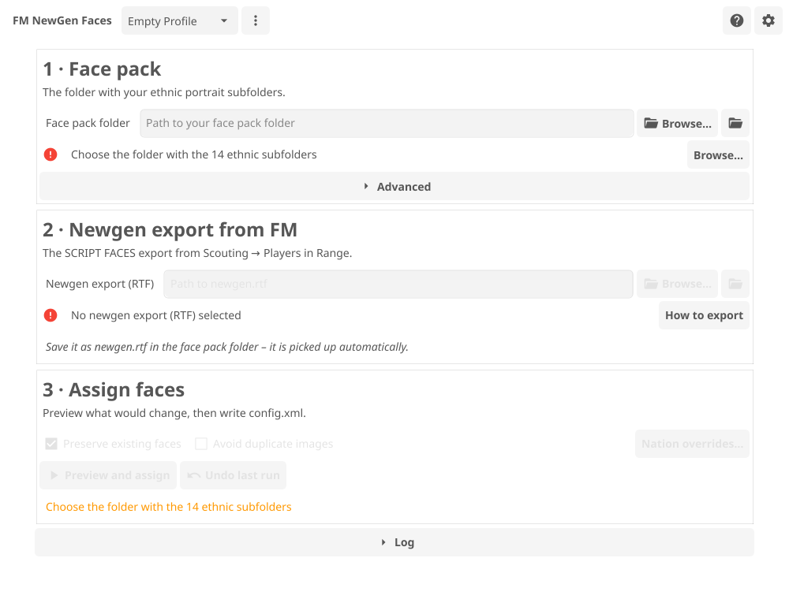
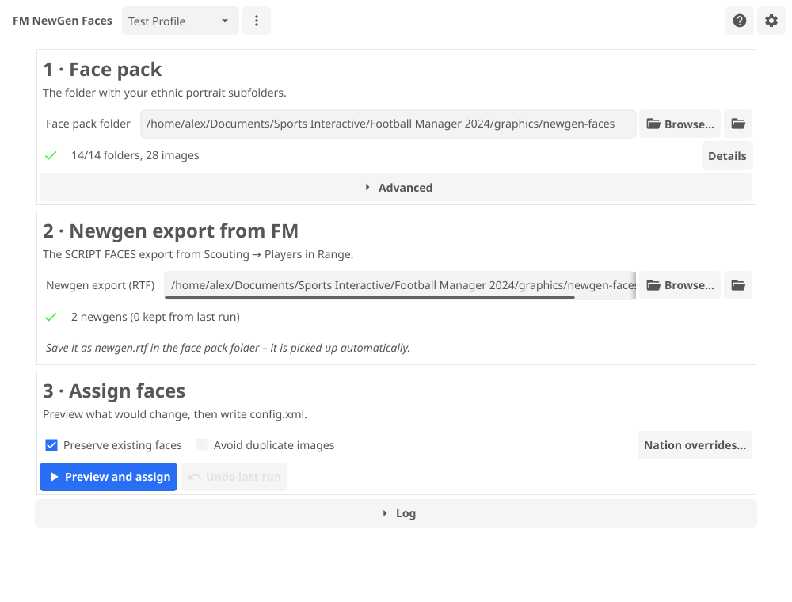

Free & open source · Windows · macOS · Linux
Give every newgen a real face
FM NewGen Faces reads the newgens (regens) from your Football Manager save and assigns each one a portrait from your face pack – in one click.
How it works
Point it at your face pack
Choose the folder with the 14 ethnic subfolders. The app checks it live and tells you exactly what is missing.

Export the newgen list from FM
Print the SCRIPT FACES player search to a text file and save it as newgen.rtf in your face pack folder – the app picks it up by itself.

Preview, then assign
See how many players get a new face before anything is written, then click Assign. A backup is kept automatically.

Everything you need for newgen faces
Live setup checklist
Face pack, config.xml, RTF export and FM version are checked as you go, each with a fix-it action.
Preview before writing
A dry-run plan shows how many players get a new face, how many are preserved, and supply vs. demand per ethnic group.
Backups and undo
Every write keeps a timestamped copy of config.xml. One click – or the CLI – restores it.
Review & reroll
See every assigned face in a searchable table with a thumbnail, and reroll any single face you don't like.
Profiles per FM install
One profile per Football Manager installation, auto-selected, with validated names and atomic saves.
Incremental runs
Preserve mode keeps existing faces and only assigns new newgens – export again each season and run.
No-duplicates mode
Images already in use can be excluded before drawing, so no two newgens share a portrait.
Headless CLI
Script the whole pipeline: assign, check, detect, restore, with JSON output.
English & German
Full UI translations, plus light/dark theme, drag and drop, and an RTF file watcher.
Frequently asked
Is it free?
Yes – FM NewGen Faces is free and open source under the GPL v3. The source is on GitHub.
Which Football Manager versions does it support?
FM20 through FM24. See the requirements for details.
Credits
FM NewGen Faces is the successor to Jaqen NewGen Tool by @imfulee, and its bundled Football Manager view and filter come from NewGAN-Manager by @Maradonna90. It was inspired by the NewGAN face-generation project.